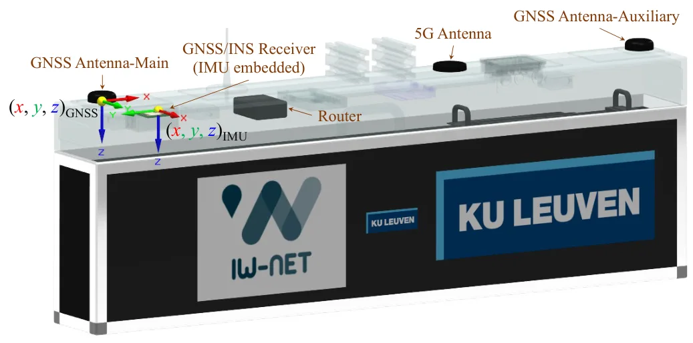
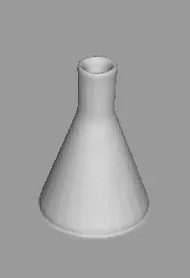

新论文 · 日期 2026-06-01 · score 21 · cs.RO, cs.CV
作者：Guo Pu, Yixuan Han, Zhouhui Lian
评分 9.2/10
主动重建单目MVS机器人探索占据地图
一句话工作总结：把单目 MVS 推向主动探索闭环，使轻量机器人能够在线重建并维护可规划占据地图。
ActMVS 面向机器人和 UAV 的主动三维重建，目标是在没有深度传感器的情况下边规划轨迹边生成可用于避障的高置信占据地图。方法通过 view factor graph 组织多视角深度预测，并加入全局深度优化，使单目输入也能在线输出较一致的 dense depth map。
Active scene reconstruction enables robots/UAVs to autonomously plan trajectories and reconstruct environments without costly manual data acquisition. Unlike passive methods, active reconstruction requires rea…

新论文 · 日期 2026-06-04 · score 15 · cs.CV
作者：Peilin Tao, Chong Cheng, Yuansen Du, Caiwei Song
评分 9/10
流式重建视觉建图Feed-forward重建回环
一句话工作总结：把视觉基础模型式重建转成 SLAM 可用的相对测量生成器，服务长序列在线建图。
Anchor3R 将 feed-forward 三维重建从固定全局坐标回归改为当前帧坐标系下的局部测量预测。每个时间步输出窗口相对位姿和局部 pointmap，再通过在线位姿更新、回环重插入和 motion averaging 拼接成长时全局重建，缓解首帧锚定和长期漂移问题。
Long-horizon online visual mapping is a core capability for robot perception, requiring continuous camera-motion and scene-geometry estimation from visual streams under bounded memory and computation. Recent f…

新论文 · 日期 2026-05-30 · score 15 · cs.CV, cs.GR
作者：Adrian Ramlal, Yan Song Hu, John S. Zelek
评分 7.1/10
3DGS点云上采样SfM初始化
一句话工作总结：从 seed point 质量入手提升 3DGS 初始化和重建效果。
论文系统评估多种 3DGS 初始点云上采样策略，包括线性/三角插值、样条曲面重建、MLS 和 Voronoi 点生成，并提出 depth-guided point lifting 来保持与 SfM 重建的几何一致性。
3D Gaussian Splatting (3DGS) is a technique for creating and rendering 3D scenes, however its performance depends heavily on the quality of initial seed points. To improve 3DGS initialization, this study prese…

新论文 · 日期 2026-06-05 · score 14 · eess.SY, eess.SP
作者：Yan-Yun Zhang, Jef Billet, Jan Swevers, Peter Slaets
评分 8.7/10
GNSSRTKINS实测Benchmark
一句话工作总结：用真实水道实验量化 RTK loss 与 INS 融合瞬态对定位连续性和闭环控制的影响。
该研究在内河航道场景实测 AsteRx-i3 D Pro+ GNSS/INS 接收机，比较 standalone GNSS、GNSS+INS、RTK GNSS、RTK GNSS+INS 四种配置。结果显示桥下通行会造成 RTK 改正丢失、定位不确定性增大和恢复阶段超过 1 m 的状态跳变。
RTK augmentation andINS integration are widely used to improve GNSS positioning performance. However, on inland waterways, bridges and surrounding structures can degrade satellite visibility and correction ava…

新论文 · 日期 2026-06-04 · score 14 · cs.GR, cs.CV, cs.LG
作者：Hongyu Zhou, Zorah Lähner
评分 8.5/10
3DGS几何表示透明物体地图后端
一句话工作总结：通过独立几何不透明度缓解 3DGS 渲染质量和几何表面质量之间的冲突。
该工作指出标准 3DGS 同时表达外观和几何时会互相牵制。作者为每个 splat 增加独立 geometry opacity，使 appearance opacity 与 geometry opacity 解耦，并在透明物体和复杂场景中提升几何与渲染质量。
After the success of 3D Gaussian Splatting (3DGS) for novel view synthesis, many works have explored how to also use it for geometric surface representation. However, extracting accurate geometric information…
新论文 · 日期 2026-06-03 · score 12 · cs.CV, cs.RO
作者：Inhee Lee, Sangwon Baik, Sungjoo Kim, Hyeonwoo Kim
Reconstructing interactive, simulation-ready 3D scenes from a single image is a critical bottleneck for robotic manipulation. While recent single-image lifters recover plausible per-object shapes, composing th…
Reconstructing interactive, simulation-ready 3D scenes from a single image is a critical bottleneck for robotic manipulation. While recent single-image lifters recover plausible per-object shapes, composing th…
新论文 · 日期 2026-06-03 · score 11 · cs.RO
作者：Thanh Nguyen Canh, Haolan Zhang, Xiem HoangVan, Antonio Sgorbissa
评分 8.1/10
语义SLAM数据关联GMM不确定性
一句话工作总结：用 GMM 不确定性建模改进语义 SLAM 的对象级数据关联。
BPDA-GMM 面向语义 SLAM 中的 object-level landmark 关联问题，用 Gaussian Mixture Models 表达观测和语义 landmark 的不确定性，并通过 Bayesian probabilistic data association 降低误关联对地图的污染。
Probabilistic data association (PDA) improves semantic SLAM in perceptually aliased scenes, but existing methods often assume a fixed landmark set, recompute association weights as the map grows, or rely on ha…
新论文 · 日期 2026-06-04 · score 10 · cs.CV, cs.RO
作者：Jean Cordonnier, Chenghao Xu, Olga Fink, Malcolm Mielle
Multi-modal novel view synthesis (NVS) combining RGB and thermal imagery enables precise 3D scene reconstruction with visual and thermal information. However, existing methods typically rely on precisely calib…
Multi-modal novel view synthesis (NVS) combining RGB and thermal imagery enables precise 3D scene reconstruction with visual and thermal information. However, existing methods typically rely on precisely calib…
新论文 · 日期 2026-06-03 · score 10 · cs.CV, cs.RO
作者：Ayumi Umemura, Toshinori Kuwahara, Marc Pollefeys, Daniel Barath
评分 7.8/10
室内定位FloorplanZero-shot重定位
一句话工作总结：从 floorplan 几何 primitive 出发完成零样本室内定位。
Z-FLoc 研究只有 floorplan 先验时如何完成室内全局定位。它利用几何 primitives 做 zero-shot localization，降低对环境专用训练数据和密集视觉地图的依赖，适合室内机器人初始化和重定位。
Visual localization -- estimating a camera pose within a pre-existing map -- is a fundamental problem in computer vision. Floorplans are an attractive map representation: they are readily available for most bu…
新论文 · 日期 2026-06-03 · score 10 · cs.CV
作者：Qingpo Wuwu, Xiaobao Wei, Peng Chen, Nan Huang
While 3D Gaussian Splatting has shown promising results in street scene reconstruction, existing methods require massive numbers of Gaussian primitives to capture fine details, leading to prohibitive storage c…
While 3D Gaussian Splatting has shown promising results in street scene reconstruction, existing methods require massive numbers of Gaussian primitives to capture fine details, leading to prohibitive storage c…